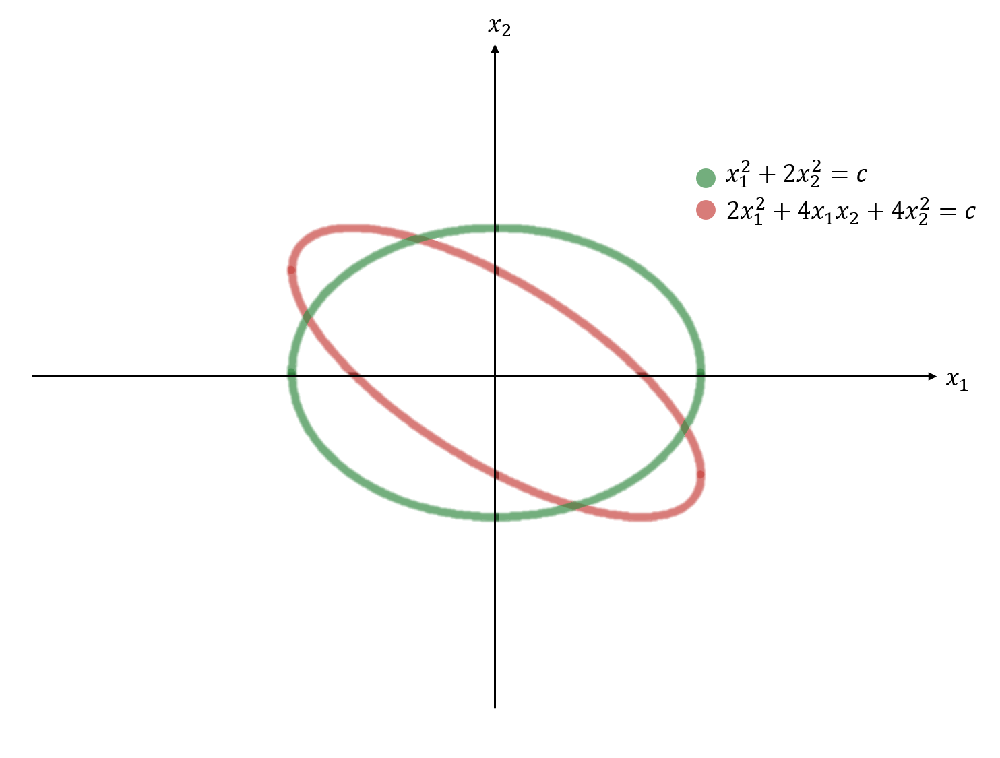

딥러닝공부방,soohee410님의 블로그을 읽고 정리한 내용입니다.
Change of Variable in a Quadratic From
Problem Setting

위의 그림은 이차형식을 좌표계에서 표현한 것이다. 각각의 이차형식에서 원점으로부터 거리가 가장 먼 좌표를 찾아보자.
- 초록색 quadtratic form의 경우 직관적으로 \(x_2 = 0\)을 대입하여 거리가 가장 먼 좌표를 바로 구할 수 있다.
- 그러나 빨강색 quadtratic form의 경우 거리가 가장 먼 곳의 좌표를 구하기가 쉽지않다.
- crossproduct term인 \(4x_1x_2\)가 존재로 인해서 현재의 좌표축을 기준으로 회전된 타원이 존재하기 때문이다.

만약 빨강색 quadratic form이 위와 같이 새로운 축을 기준으로 표현된다면 어떨까?
- 새로운 축을 기준으로 빨강색 타원은 회전되지 않은 형태이기에
- cross product항이 제거되어 가장 먼 곳의 좌표를 직관적으로 \(y2=0\)을 대입하여 쉽게 구할 수 있다.
- 이와 같이 축을 바꿔서 하여 cross product항을 제거하면 최소 또는 최대가 되는 좌표를 바로 보다 쉽게 구할 수 있게 해줘서 최적화 관점에서 이점이 많다.
그렇다면 주어진 식을 새로운 축을 기준으로 간다하게 바꾸려면 어떻게 해야 뭘까?
Method
- 이차형식의 변수변환에서 \(\bf{x}\)는 \(\bf{{\bf{y}}}\)와 대칭행렬 \(A\)의 고유벡터의 모음인 \(P\)의 곱이라고 가정한다.
- 이때 \(P\)는 행렬\(A\)가 대칭행렬이며 따라서 직교대각화가 가능하므로 \(P\)는 \(P^{-1} = P^T\)를 만족하는 orthonormal matrix이다.
- \(A=A^T\)인 대칭행렬은 직교대각화가 가능하며 고유벡터들은 서로간에 직교한다는 사실을 기억하자.
\[\begin{aligned}
&{\bf{x}} = P{\bf{{\bf{y}}}} \\
&{\bf{{\bf{y}}}}=P^{-1}{\bf{x}}\\
&\text{where }P^{-1} = P^T
\end{aligned}\]
- 고유벡터들의 집합인 \(B = \{p_1,p_2,\dots,p_n\}\)를 구성해보자.
- \(B\)는 \(\mathbb{R}^n\)공간의 표준기저 \(\{e_1,e_2,\dots,e_n\}\)가 아닌 또다른 정규직교기저이다.(B의 span은 \(\mathbb{R}^n\)이기 때문이다.)
그렇다면 여기서 \({\bf{y}}\)는 뭘까?
- \({\bf{x}}\)를 나타낼 수 있는 정규직교기저이자 \(A\)의 고유벡터 집합인 \(B\)로 표현한 좌표\([{\bf{x}}]_B\)이다.
\[\begin{aligned}
&{\bf{x}} = P{\bf{y}}\\
&\Longleftrightarrow {\bf{x}} = p_1y_1 + p_2y_2 + \dots + p_ny_n\\
&\Longleftrightarrow {\bf{y}} = [{\bf{x}}]_B
\end{aligned}\]
위에서 가정한 사실을 이차형식에 대입해보자
\[\begin{aligned}
&{\bf{x}}^TA{\bf{x}} = (P{\bf{y}})^TA(P{\bf{y}}) = {\bf{y}}^TP^TAP{\bf{y}} = {\bf{y}}^TD{\bf{y}}\\
&\text{where } D = P^TAP,P^T = P^{-1}
\end{aligned}\]
- \(A\)는 symmetric하므로 직교대각화\(D = P^TAP\)가 가능하다.
- 따라서 벡터\({\bf{x}}\)의 quadratic form은 벡터\({\bf{y}}\)의 quadratic form이 되고
- \(A\)의 고윳값을 모아놓은 대각행렬 \(D\)가 quadratic form의 matrix가 됨을 알 수 있다.
\[\begin{aligned}
{\bf{x}}^TA{\bf{x}}= {\bf{y}}^TD{\bf{y}} =
\begin{bmatrix}
y_1^T \\
y_2^T \\
\vdots \\
y_n^T
\end{bmatrix}
\begin{bmatrix}
\lambda_1 & 0 &\dots & 0 \\
0 & \lambda_2 &\dots & 1 \\
\vdots & \vdots &\ddots & \vdots \\
0 & 0 & \dots & \lambda_n \\
\end{bmatrix}
\begin{bmatrix}
y_1 & y_2 & \dots & y_n
\end{bmatrix}
= \lambda_1y_1^2 + \lambda_2y_2^2 + \dots + \lambda_ny_n^2
\end{aligned}\]
- 조금 더 전개해보면 위와 같은 \(y\)에 관한 식으로 나타난다.
- 변환결과 \(D\)가 대각행렬이기에 행렬곱의 결과로 crossproduct term이 나타나지 않았으며
- \(B = \{p_1,p_2,\dots,p_n\}\)를 기저로 하는 새로운 좌표축에서 y에 관한 방정식이 표현되었다.
- 따라서 원점에서 거리가 가장 먼 지점을 비교적 쉽게 구할 수 있다.
- \({\bf{y}}^TD{\bf{y}} = \lambda_1y_1^2 + \lambda_2y_2^2\)와 같은 타원이라면
- $y_2 = 0 $을 대입하여 쉽게 구할 수 있다.
- 물론 고윳값,고윳벡터를 구하는 과정이 필요함을 잊지말자.
Example : orthogonally diagonalize
\(A =\begin{bmatrix}4 & 2 & 2 \\ 2 & 4 & 2 \\ 2 & 2 & 4\end{bmatrix}\)인 symmetric matrix를 직교대각화해라.
먼저 행렬 A의 고윳값과 고유벡터를 구해보자. 다음과 같은 방정식을 만족하는 \(\lambda\)가 고윳값이다.
\[\begin{aligned}
&\text{det}(\lambda I - A) = 0 \\
&\Longleftrightarrow
\begin{vmatrix}
\lambda -4 & -2 & -2 \\
-2 & \lambda -4 & -2 \\
-2 & -2 & \lambda -4
\end{vmatrix} = 0 \\
&\Longleftrightarrow(\lambda-2)^2(\lambda-8) = 0
\end{aligned}\]
따라서 고윳값은 2와 8이다. 각각의 고윳값에 대한 단위고유벡터를 구해보면 다음과 같다.
- 이때 \(p_2\)가 바로 구해지지는 않으며 아직 공부하지 못한 방법이다.
- 서로간에 직교인 고유벡터들을 구성하는 방법은 나중에 공부를 더 해야할 듯 하다.(그람슈미트?직교여공간?)
\[\begin{aligned}
&
\lambda=2 : p_1 = \begin{bmatrix}-1/\sqrt{2} & 1/\sqrt{2}& 0\end{bmatrix}^T,p_2 = \begin{bmatrix}-1/\sqrt{6}&-1/\sqrt{6}&2/\sqrt{6}\end{bmatrix}^T \\
&\lambda=8 : p_3 = \begin{bmatrix}1/\sqrt{3} & 1/\sqrt{3} & 1/\sqrt{3}\end{bmatrix}^T
\end{aligned}\]
대각행렬 D를 구해보면 다음과 같다.
\[\begin{aligned}
D = P^{-1}AP = \text{diag}(2,2,8)
\end{aligned}\]
import torch
A = torch.FloatTensor([
[4,2,2],
[2,4,2],
[2,2,4]
])
p_1 = torch.FloatTensor(
[[-1/2**(1/2),1/2**(1/2),0]]
).T
p_2 = torch.FloatTensor(
[[-1/6**(1/2),-1/6**(1/2),2/6**(1/2)]]
).T
p_3 = torch.FloatTensor(
[[1/3**(1/2),1/3**(1/2),1/3**(1/2)]]
).T
P = torch.concat([p_1,p_2,p_3],axis=1)
P_inv = P.inverse()
#대각화
D = P_inv @ A @ P
print("대각행렬 D\n",D.round())
대각행렬 D
tensor([[2., 0., -0.],
[-0., 2., -0.],
[0., 0., 8.]])
The Principal Axes Theorem
Principal Axes Theorem(주축정리)는 위에서 공부한 사실에 대한 정리이다.
\(A\)가 \(n \times n\)인 대칭행렬일 때, quadratic form인 \(x^TAx\)를 cross-product항이 존재하지 않는 이차형태 \(y^TDy\)로 변환시키는 직교 변수변환 \({\bf{x}} = P{\bf{y}}\)가 존재한다.
(Detail)
- 이때 \(A\)행렬의 고유벡터는
- Orthonormal matrix \(P\)의 각각의 열(column)이며
- 새로운 축으로 표현할 때의 정규직교기저이다.
- Orthonormal matrix \(P\)를 이차형식의 주축(principal axes)라고 부른다.

- 위의 그림의 (a)는 바로 위 예제에서 사용된 이차형식이다.
- \(y_1\)과 \(y_2\)는 \(\mathbb{R}\)^2의 기저인 \(B = \{p_1,p_2\}\)을 기저로 하는 새로운 축이며
- 타원은 이 축을 기준으로 원점에 놓이며 회전하지 않은 (표준)형태이다.
\({\bf{x}}^TA{\bf{x}}> 0 \Longrightarrow\) A가 invertible하다.
임의의 행렬 \(A \in \mathbb{R}^{n \times n}\)일 때 다음이 성립한다.
\[\text{det}(A) = \lambda_1\lambda_2\dots\lambda_n\]
만약 \(A = A^T\)인 대칭행렬이며 이차형식이 positive definite라면 다음과 같다.
\[({\bf{x}}^TA{\bf{x}}>0) \Longleftrightarrow \text{positive definite}\rightarrow \forall i,\lambda_i >0 \rightarrow \text{det(A)}>0 \rightarrow A : \text{invertible}\]
\(\therefore\) 이차형식이 positive definite라면 이차형식의 행렬\(A\)는 invertible하다.